News
Making a private file sharing network (Update) - Entry Date: 21st April 2026
This is an update to "Making a private file sharing network" written on 14th June 2025.
It sure has been a while since I made my post about making a file sharing
network. Almost an entire year later, I've finally done it, but
not exactly like
I described in the post.
Let's start with the first difference. I may have mentioned that I was going
to get an Orange
Livebox router. That later turned out to not be true. I instead had a good look, and
aimed my sights at the Orange Brightbox wireless
router
from 2012. You may be wondering why I picked that one. I'll be happy to answer
that.
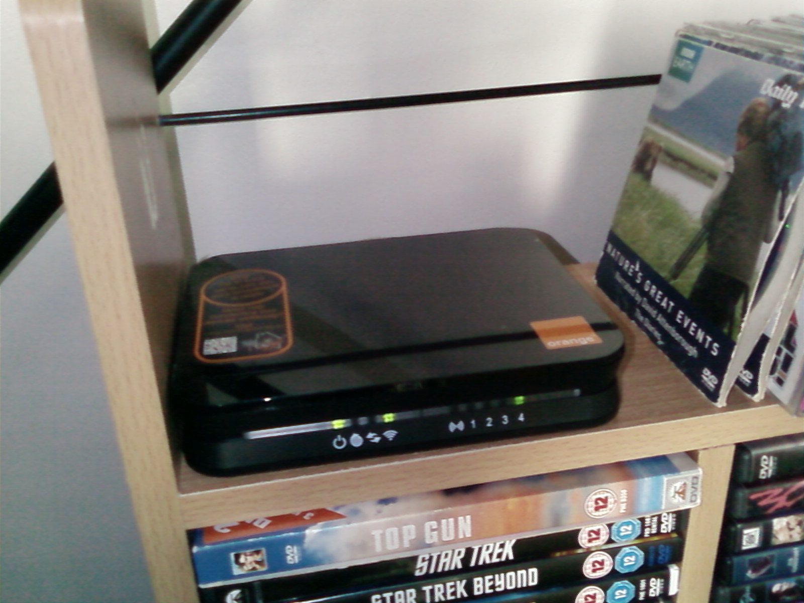
This because compared to the Livebox (1 LAN, 1 WAN), The Brightbox
has more Ethernet ports (3 LAN, 1 WAN). This will obviously
allow for users to
plug in multiple devices
via Ethernet. The second is that it also seems to be of a significantly smaller
size than the
Livebox. It's a little bit smaller than a standard DVD case, and
this can be great for space saving.
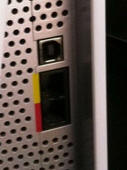
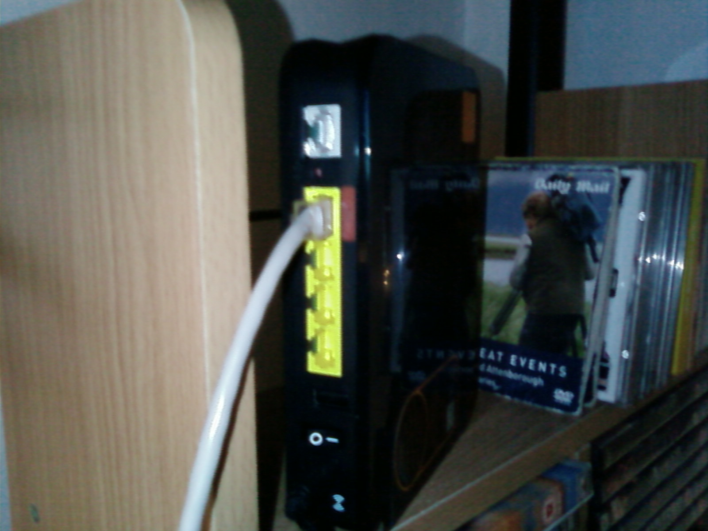
(Left: Livebox Ethernet Ports, Right: Rear of Brightbox router)
The Brightbox is a basic router, but that's literally all I need. All I
needed was a basic router for local-only networking. Both the Livebox
and the
Brightbox fit that criteria perfectly.
I only chose the Brightbox for its smaller size and the extra ports. This thing
was brand new
too, and came boxed.
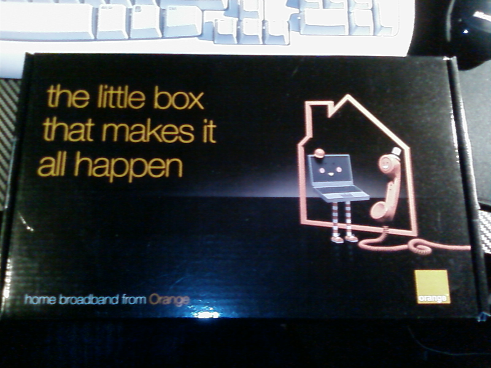
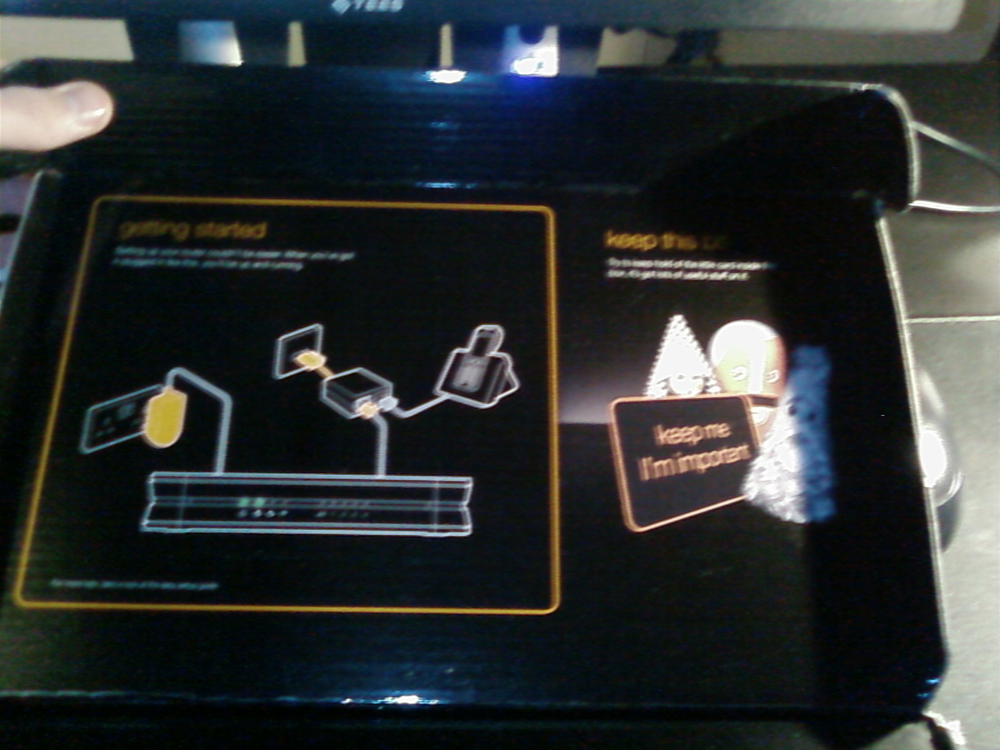
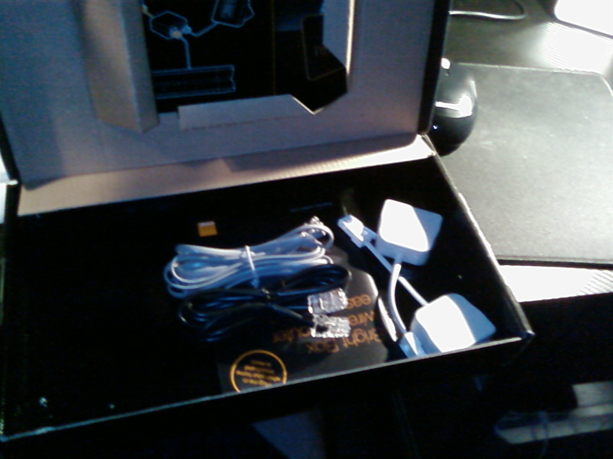
...Also, yes. There's this graphic in the instruction manual of a cuppa and a custard cream and it never fails to make me crave that exact thing.
After around about a day, I had also started experimenting, and by day 3, I
had actually managed to figure out how to get the thing back
online, but not via
ADSL, but instead
utilising my own server. (...And no, I don't mean copies of web pages, I mean
ACTUALLY online.)
First, I went ahead about exploring the gateway config pages, and changing
things to my liking. I had set up things such as local IP
reservations via the DHCP settings, passwords, and the like.
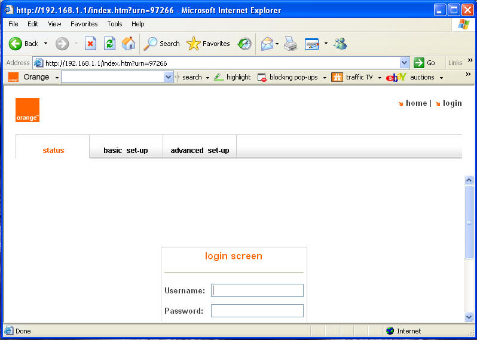
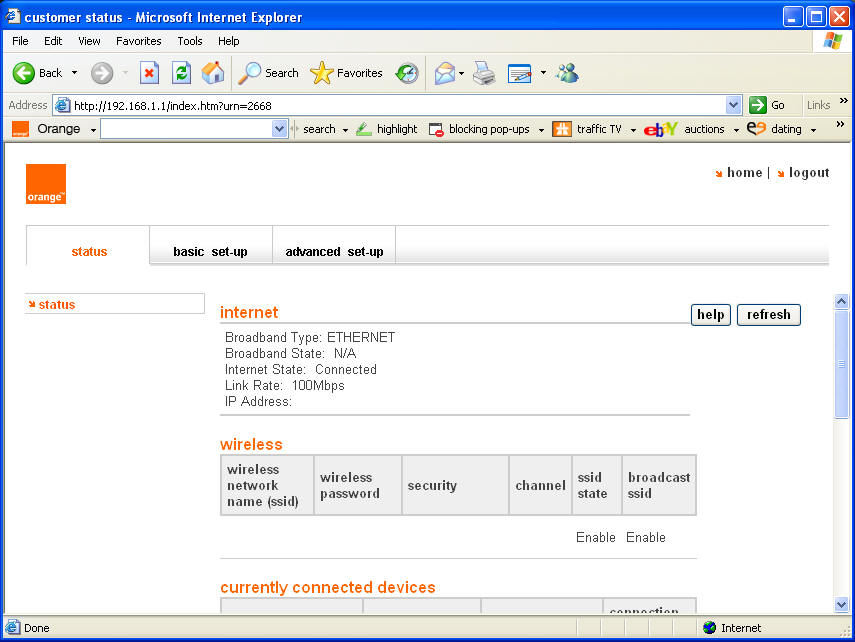
For privacy and safety reasons, some data in these screenshots have been redacted.
I had also figured out that it is indeed possible to access a manufactory
telnet system. You must have to reset it to the manufactory
defaults in order to
access it though.
To do it, sign into your Brightbox gateway. I recommend at this stage, you take
a backup of
your current settings just in case things go wrong. You can do this
via "advanced set up > tools > configuration > backup". This
should have a
backup BIN file get downloaded to your PC. Keep it safe. Once that's done,
insert the following
into your URL bar.
(Make sure the 192.168.1.1 address is whatever gateway you've
configured your Brightbox to be)
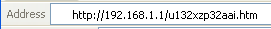
Afterwards, you should get greeted with this screen. Press "manufactory
default". Wait for your Brightbox to sort itself out afterwards.
It also goes to
say that you should
be connected via Ethernet during this time. Manufactory mode should give you
access to your
Brightbox's root terminal. Try to connect to it via
192.168.1.1:23.
Bare in mind, that when I was in this mode, I did lose all internet
connectivity
etc.
Warning: In my experience, attempting to
reconfigure settings or restore from backup either didn't work, or just straight
away locked me out of the
telnet stuff.
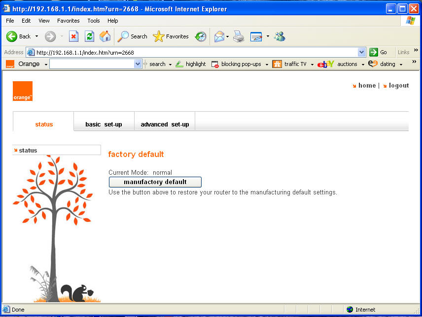
Now for the main event:
Just how did I get this router back on the information superhighway all these
years later, and without ADSL? It's somewhat
simple: The WAN port. I had figured
this out accidentally when playing with network bridges in Windows 7. I would
give
ADSL a shot, but my doubts that it would work are extreme. Not only does
Orange not exist in the UK anymore, but even
if they did, I wouldn't have
credentials to get online anyway.
...Plus I'm pretty sure the DSL/Phone sockets are already in use.
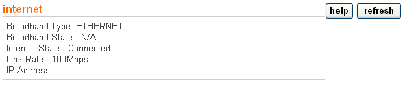
For privacy and safety reasons, some data in these screenshots have been redacted.
Now it goes without saying this, but you are screwing with router settings. Take a backup (instructions are higher up) first.
Now this is not entirely a plug-and-play thing. Some tiny reconfigs are
required. You must switch your broadband type from
ADSL to Ethernet.
You can do this by going to "basic set-up > broadband settings". At the top of
the list, you should see two
radio buttons with a "Broadband Type:" label.
The options are "ADSL" and "Ethernet" change this from ADSL to Ethernet.
The
options available should change.
(E.G: Broadband Username/Password vanishing.) Don't worry about this. These
options
are only needed for ADSL and are thus not required for an Ethernet-based
configuration.
...and that's it for the router configuration! Now it's time to configure the
server to output your internet connection to the router.
Plug in your Ethernet cable into your server, and port 4 of the Brightbox. This
is the WAN port, literally indicated by the red WAN
label above. On the server, depending on the operating system, the bridge
creation method is different. My server runs a linux-based
system. I took the path of least resistance and just did it through a desktop
GUI and set it up to be automatic. I couldn't figure
out how to do it with the terminal. Once that's done, all the rest should be
plug-and-play. Test it on a device other than your server like a
tablet. Try going to the gateway (don't have to sign in), and then try going to
a website. If it works, then obviously it works.